AI je konzultant, ne řešitel
AI můžete použít k vysvětlení nejasností, hledání chyb, získání nápadů nebo pochopení principů. Není dovoleno pouze zadat celé zadání a použít výsledek jako hotové řešení.
VÝUKOVÝ PROJEKT · 3. ROČNÍK
Od vlastního nápadu přes skutečné zapojení až po funkční program, prezentaci a dokumentaci.
01 / ZÁKLADNÍ ZADÁNÍ
Samostatný projekt sestává z vytvoření fyzického zapojení s Arduinem a alespoň dvěma periferiemi například motory, displeji, čidly nebo jinými moduly. Součástí projektu je také vytvoření funkčního programu.
Projekt budete vypracovávat převážně doma, na hodinách bude vyhrazen prostor pro dotazy, konzultace a řešení problémů.
02 / POMOCNÉ NÁSTROJE
AI můžete použít k vysvětlení nejasností, hledání chyb, získání nápadů nebo pochopení principů. Není dovoleno pouze zadat celé zadání a použít výsledek jako hotové řešení.
Každé využití AI, které vám pomohlo, stručně popište v dokumentaci projektu. Například: „AI jsem použil k vysvětlení funkce map().“
Pokud použijete nápad získaný pomocí AI, musíte umět vysvětlit, proč je v projektu použitý a jak funguje.
03 / KVALITA KÓDU
04 / HODNOCENÍ
Kontrola hardwaru
Projekt a prezentace
| Oblast hodnocení | Body | Popis |
|---|---|---|
| Funkčnost | 7 bodů | Projekt splňuje všechny body zadání a je funkční. |
| Znalost programu | 8 bodů | Žák prokáže, že programu rozumí a pouze jej bez pochopení nezkopíroval. |
| Včasné odevzdání | 5 bodů | Projekt je odevzdán ve stanoveném termínu. |
| Prezentace | 5 bodů | Prezentace před třídou včetně předvedení funkčnosti. Doporučená délka je přibližně 2 minuty plus čas na dotazy. |
05 / ODEVZDÁNÍ
Druhá známka s váhou 1,0 je za dokumentaci projektu. Dokumentace se odevzdává jako PDF soubor pojmenovaný Jmeno_Prijmeni_trida.pdf podle šablony.
| Část dokumentace | Body | Co má obsahovat |
|---|---|---|
| Název PDF | 1 bod | Soubor pojmenovaný ve tvaru Jmeno_Prijmeni_trida.pdf. |
| Zadání | 1 bod | Kompletní zadání zkopírované z Githubu. |
| Popis řešení | 2 body | Několik vět vlastními slovy o postupu řešení, použitých nástrojích, knihovnách a variantách řešení. |
| Schéma | 5 bodů | Schéma zapojení vytvořené například ve Wokwi, KiCADu nebo jiném vhodném programu. |
| Včasné odevzdání | 5 bodů | Dokumentace je odevzdána ve stanoveném termínu. |
| Fotografie zapojení | 2 body | Fotografie skutečně sestaveného zapojení. |
| Kód | 2 body | Přehledně naformátovaný kód s komentáři, vložený jako text, nikoli jako obrázek. |
| Zdroje | 2 body | Seznam použitých zdrojů včetně odkazů na použité knihovny. |
| Závěr | 2 body | Zhodnocení, zda byly splněny všechny body zadání a jaké problémy se řešily. |
| Celková úprava | 3 body | Vhodné písmo, zarovnání, přehlednost a žádné osamocené nadpisy na konci stránky. |
06 / ORIENTAČNÍ PŘEVOD
Orientační převod podle původních pravidel:
| Body | Známka |
|---|---|
| 25–22 | 1 |
| 21–16 | 2 |
| 15–10 | 3 |
| 9–5 | 4 |
| 5–0 | 5 |
07 / INSPIRACE
Hra na postřeh pro dva hráče
Hodinky s budíkem a stopkami
Automatické ovládání dvířek do kurníku s počítadlem slepic
Voltmetr se dvěma napěťovými rozsahy a měřením proudu
Ovládání výtahu s krokovým motorem, tlačítky a displejem
Kódový zámek s možností změny kódu
Hudební přehrávač s dálkovým ovládáním
Reklamní banner s maticovým displejem
Robot jako sledovač čáry s funkcí objetí překážky
Přidání počitadla ujeté vzdálenosti pro robota
Úprava školního robota pro ovládání joystickem
Stavba robota podle vlastního návrhu
08 / KATALOG
Přehled dostupných modulů a součástek pro inspiraci při návrhu vlastního projektu.
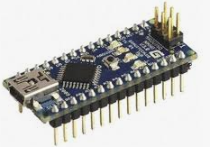
Menší deska se stejným procesorem jako Arduino UNO, vhodná do nepájivého pole.
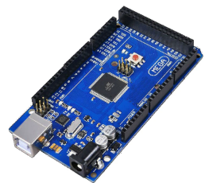
Deska s ATmega 2560, 56 IO piny a 16 analogovými vstupy.
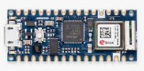
Arduino s výkonnějším procesorem, Bluetooth a WiFi modulem.

Modul reálného času s bateriovým zálohováním, komunikace přes I2C.
Shield s RTC modulem a SD kartou, vhodný pro ukládání naměřených dat.
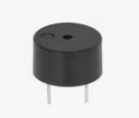
Pro jednoduché zvukové efekty, pípání a tóny.
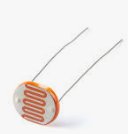
Součástka s odporem závislým na osvětlení.
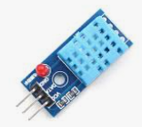
Senzor pro měření teploty a vlhkosti.
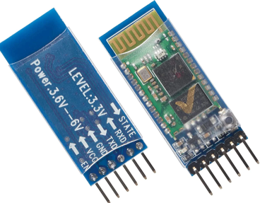
Bezdrátový modul pro sériovou komunikaci přes Bluetooth.
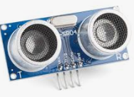
Ultrazvukový senzor vzdálenosti s rozsahem přibližně 2 cm až 3 m.
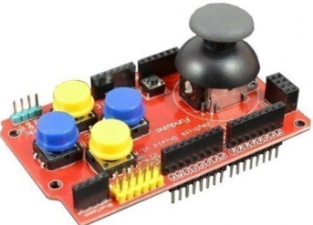
Rozšiřující deska s joystickem a několika tlačítky pro ovládání projektů.
Modul pro čtení RFID karet a čipů s frekvencí 13,56 MHz.
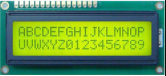
Znakový LCD displej 16×2 pro zobrazení textových informací.
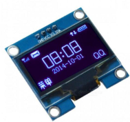
Malý grafický displej s vysokým kontrastem, komunikace přes I2C.
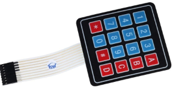
Membránová klávesnice 4×4.
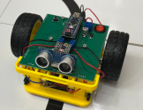
Robot s Arduinem, motory, ultrazvukovým senzorem a senzory čáry.
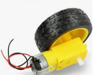
Stejnosměrný motor s převodovkou a kolem, vhodný pro stavbu vlastního robota.
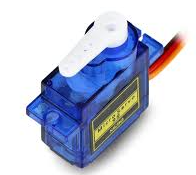
Malý servomotor s přesným řízením polohy 0–180°.
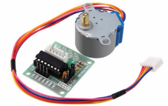
Motor s přesným krokovým řízením, používaný například v CNC nebo 3D tisku.
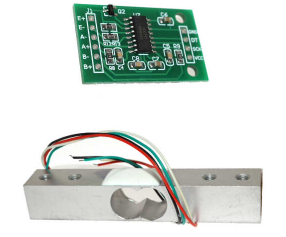
Hmotnostní senzor s modulem HX711 do 5 kg nebo do 20 kg.
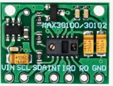
Senzor srdečního tepu s modulem MAX30100.
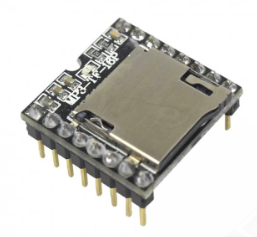
Modul s MP3 přehrávačem a integrovaným zesilovačem pro připojení reproduktoru.
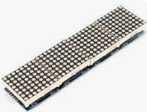
LED Matrix matice 8×8×4 s MAX7219.
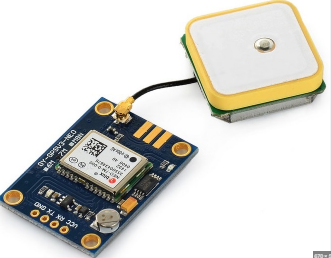
Modul GPS NEO-6M s anténou.
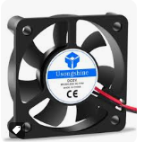
Ventilátor 50 mm, 5 V.
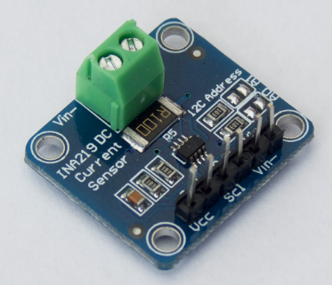
Senzor INA219 pro měření proudu, připojení přes I2C.
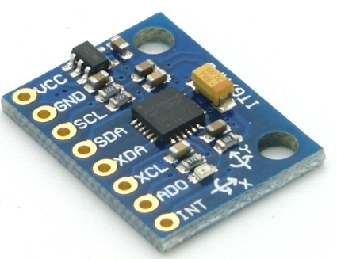
Tříosý akcelerometr GY-521.
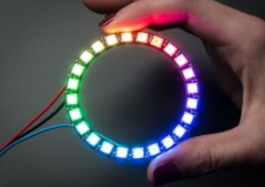
24× RGB LED WS2812B.
Žádná součástka neodpovídá hledání.